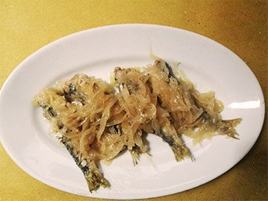

Sarde in Saor

A great example of a poor dish that, over time, has become a symbol of traditional cuisine of the Veneto region.
Apparently dating back to the 14th century, Sarde in Saor can now be found in any traditional “bacaro”,
the Venetian “osteria” where humble typical dishes and the unmissable spritz are served.
It can be prepared either for special occasions,
such as the Redentore Festival in July, or for convivial meals with family and friends:
any moment will do!
- Already cleaned Sardines: 600g
- White onions: 600g
- White wine vinegar 200mL
- Bay leaf: 2 leaves
- Sugar: 1 tablespoon
- Pine nuts: 40g
- Raisins: 40g
- Extra virgin olive oil: 3 tablespoons
- Pepper
- Salt
- Peanut oil (for frying)
- Flour: 2 tablespoons
- Finely cut the onions, salt them and lightly fry them for about 30 mins in olive oil.
- Once turned golden, add a spoonful of sugar and drizzle with half a glass of white wine vinegar.
Set aside when ready.
- In the meantime, flour the sardines and fry them in the peanut oil.
Dry the sardines from the oil in excess.
- Soak the raisins in warm water for 10 mins, then squeeze them to remove water.
- In a bowl lay some of the sardines, add a layer of onions, pine nuts, raisins and vinegar.
Add other layers of sardines and onions until the end.
Finish the preparation with the onions.
- Add salt, pepper and the bay leaves. Cover with plastic wrap.
Store the bowl for at least 24 hours in a cool, dry place.
- Serve it at room temperature. You can sprinkle some breadcrumbs, olives and capers to taste.
Wine pairing
: Serve Sarde in Saor with a glass of fine Venetian wine
such as Soave Superiore DOCG or Colli Euganei Pinot Bianco DOC.